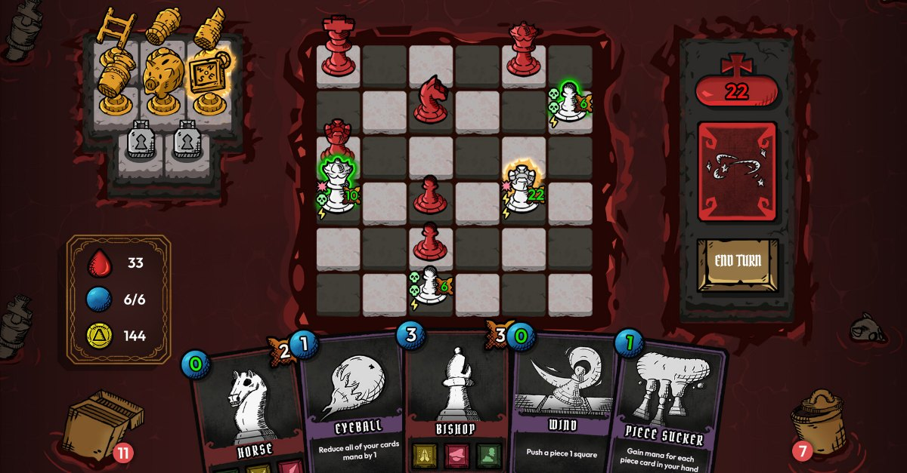
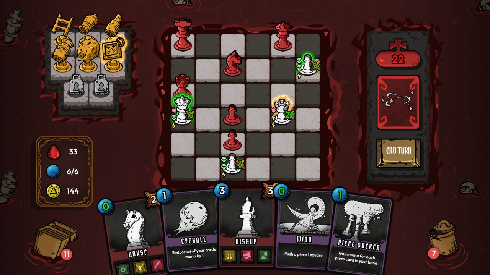
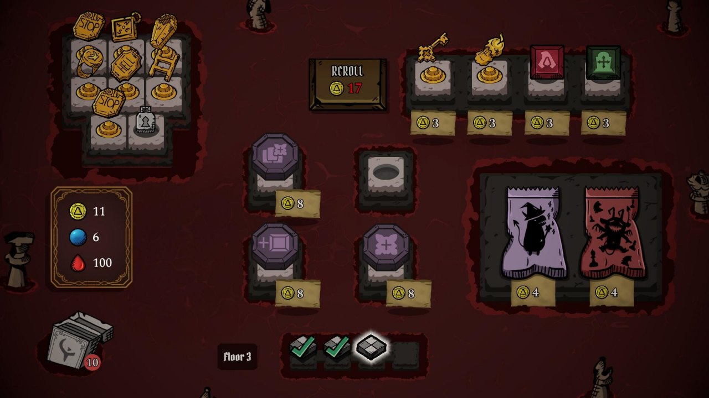
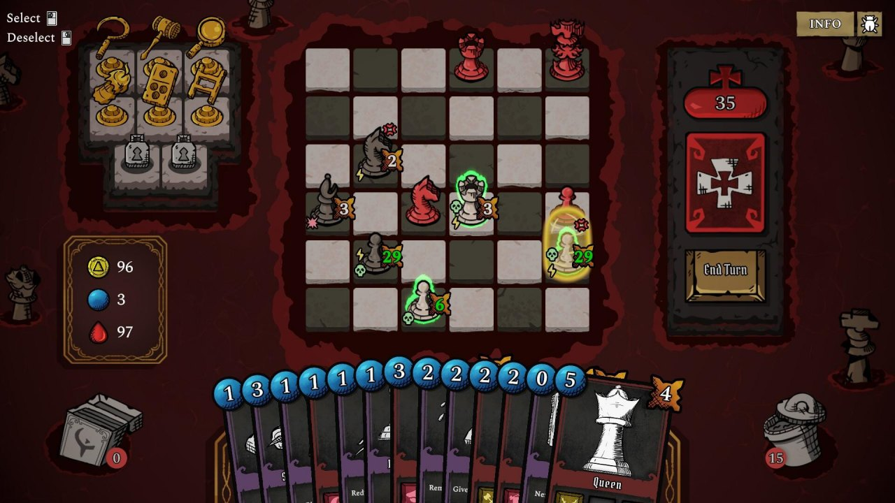
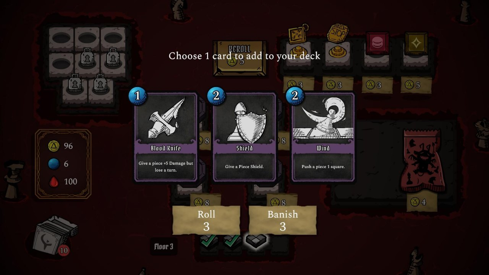

🏆 Google Bootcamp'24 Special Jury Award (as Escape of The King)🏆 Google Bootcamp'24 Jüri Özel Ödülü (Escape of The King olarak)HELLMATE
A roguelike deck-building chess game set in the seven floors of Hell. Each floor belongs to a deadly sin with its own king: summon pieces, cast spells and brand your army with sigils to bring the king down before your turns run out.
Cehennemin yedi katında geçen, roguelike bir deck-building satranç oyunu. Her kat, kendi kralı olan bir ölümcül günaha ait: taşlar çağırın, büyüler yapın ve ordunuzu mühürlerle damgalayarak turlarınız bitmeden kralı alt edin.
The gameOyun
- Chess meets deck-building: spend mana to summon pieces and cast spells, then combine them into combos.
- Satranç ve deste kurma bir arada: mana harcayarak taş çağırın, büyü yapın ve bunları kombolara dönüştürün.
- Seven kings, one for each deadly sin, each on its own floor of Hell.
- Yedi kral: her ölümcül günah için bir tane, her biri Cehennemin kendi katında.
- Lots to build with: 60+ sigils, 40+ spell cards and 30+ mate statues.
- Kurmak için bolca seçenek: 60'tan fazla mühür, 40'tan fazla büyü kartı ve 30'dan fazla mate heykeli.
- Roguelike runs with Soul Coins and permanent upgrades between them.
- Roguelike koşular: Soul Coin'ler ve koşular arasında kalıcı geliştirmeler.
ScreenshotsEkran görüntüleri




From bootcamp to SteamBootcamp'ten Steam'e
- Escape of The King: built by our team in the 90-day Google Game & App Academy Bootcamp'24, where it won the Special Jury Award among 3000+ contestants.
- Escape of The King: ekibimiz tarafından 90 günlük Google Oyun ve Uygulama Akademisi Bootcamp'24'te geliştirildi ve 3000'den fazla katılımcı arasında Jüri Özel Ödülü'nü kazandı.
- HELLMATE: the game was renamed and developed further by an 8-person team with Volvox Games, presented at the Take Off'24 startup summit, and released as a demo on Steam.
- HELLMATE: oyun yeniden adlandırılarak Volvox Games ile 8 kişilik bir ekip tarafından geliştirilmeye devam etti; Take Off'24 girişim zirvesinde tanıtıldı ve demosu Steam'de yayımlandı.
- My role: game design, gameplay mechanics and cutscenes in Unity.
- Rolüm: Unity'de oyun tasarımı, oynanış mekanikleri ve ara sahneler.